Keturių dienų kelionė automobiliu po pietinę ir vidurio Albaniją: iš Tiranos oro uosto per Krujės pilį ir Belšo ežerą pasieksime Beratą su jo garsiuoju senamiesčiu, tada per Osumo kanjoną nuvažiuosime į Vlorės/Radhimės pakrantę, o paskutinę dieną sustosime prie Karavastos lagūnos su rausvaisiais pelikanais, kol grįšime į Tiranos oro uostą vakariniam skrydžiui į Varšuvą.
✈️ Skrydis ten: Varšuva → Tirana, spalio 30 d., atvykimas apie 20:30. Skrydis atgal: Tirana → Varšuva, lapkričio 2 d., išvykimas apie 19:05.
1 diena (spalio 30, penktadienis): atvykimas į Tiraną
🧭 Dienos maršrutas Google Maps
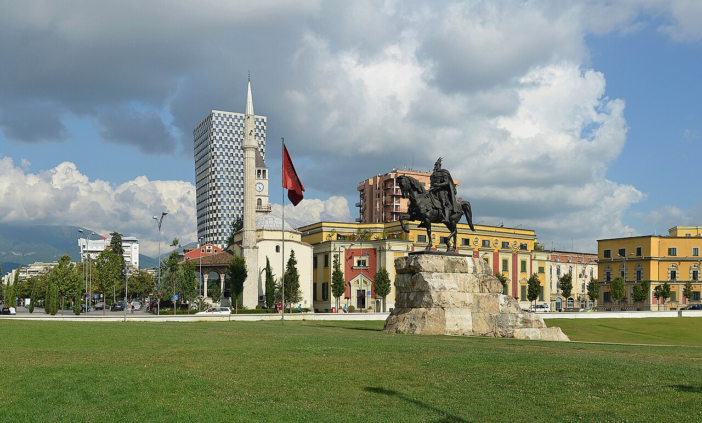
2 diena (spalio 31, šeštadienis): Tirana → Krujė → Belšo ežeras → Beratas
🧭 Dienos maršrutas Google MapsTai ilgiausia vairavimo diena kelionėje (apie 4 val.) – nebūtina pridėti papildomų stotelių.
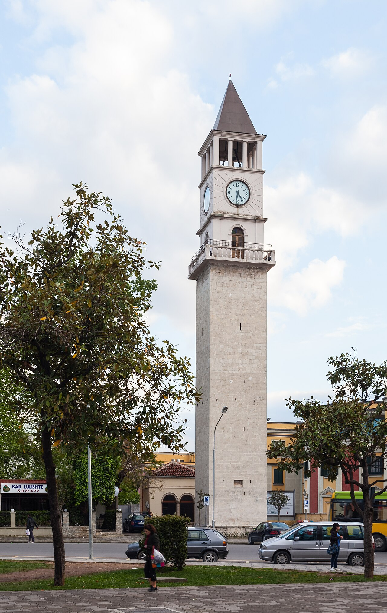
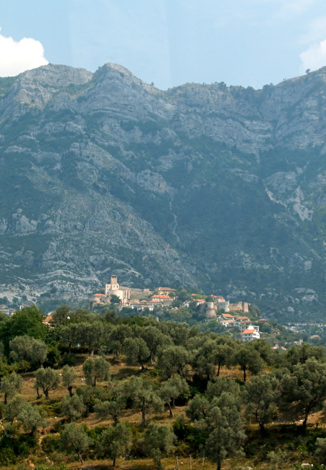
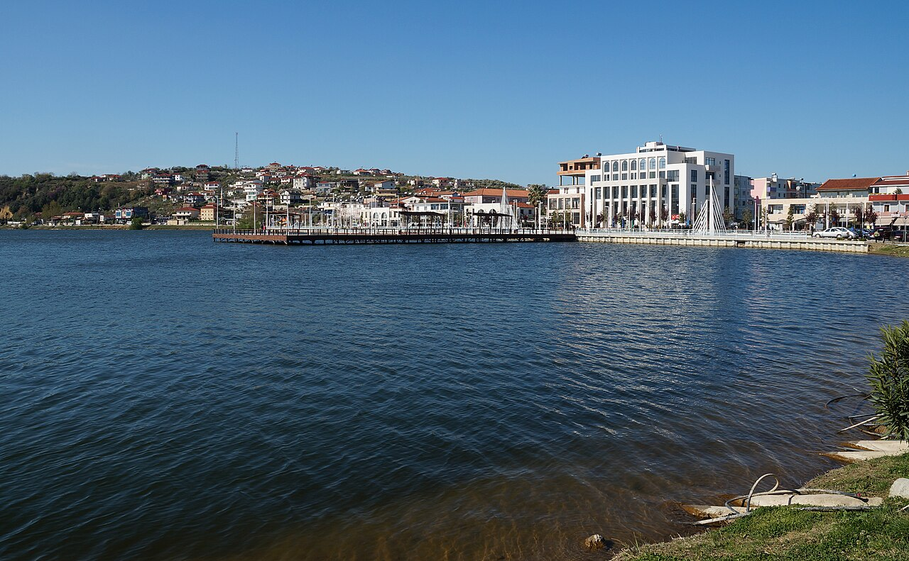


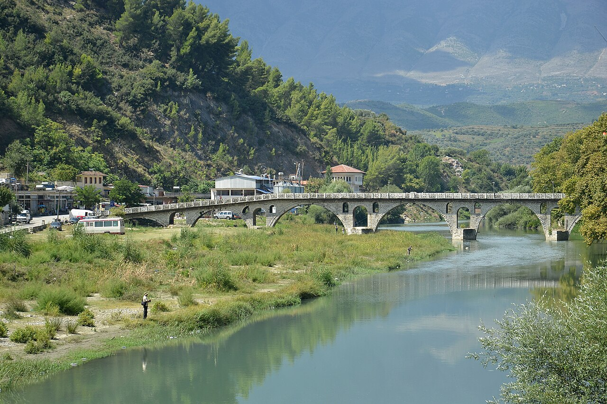
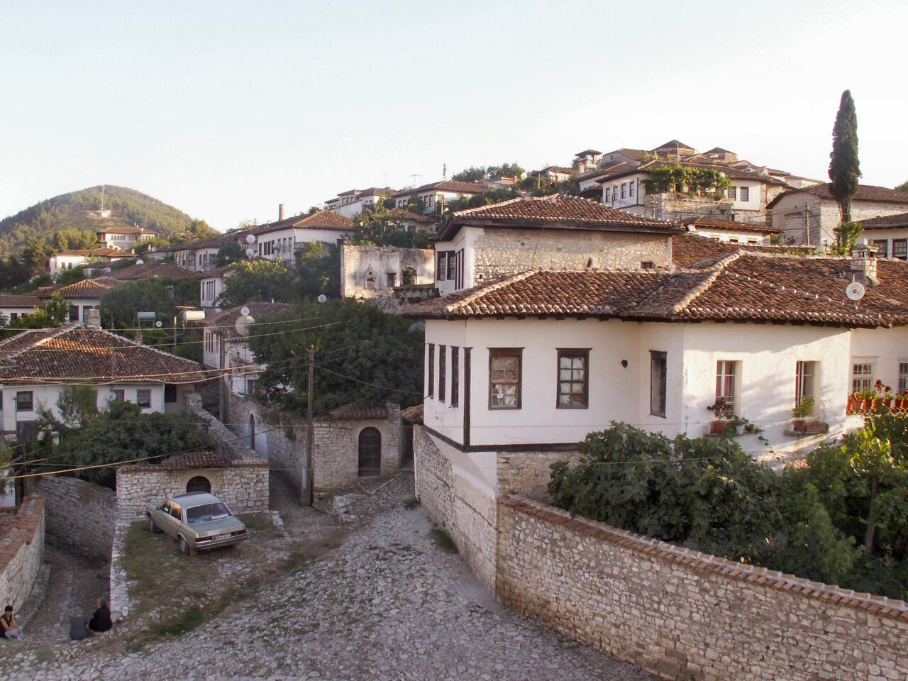
🌧 Planas B (jei blogas oras)
Krujė ir Berato muziejų diena – tiesus kelias į Beratą vietoje Belšo ežero ir Goricos tilto.
Belšo ežero sustojimas yra atviras lauko taškas be priedangos, o pilies kalvos pasivaikščiojimas ir Goricos tiltas blogu oru praranda vertę – šlapias grindinys slidus, vaizdai dingsta. Ši diena baigiasi toje pačioje vietoje kaip ir pagrindinis planas.
🚗 Viso važiavimo: apie 3 val. 3 min.
🧭 Plano B maršrutas Google Maps💡 Onufrio ikonų ir Etnografinis muziejai žiemą dirba antradieniais–šeštadieniais 9:00–16:00 – šeštadienį spėsite aplankyti abu iki uždarymo.
3 diena (lapkričio 1, sekmadienis): Beratas → Osumo kanjonas → Vlorė/Radhimė pakrantė
🧭 Dienos maršrutas Google Maps


🌧 Planas B (jei blogas oras)
Apolonija ir Vlorės istorija – vietoje kanjono ir pliažo.
Osumo kanjono aikštelė ir takas žemyn bei pliažo popietė priklauso nuo gero oro – lietuje ir vėjyje takas tampa slidus, o pliažas nenaudojamas. Ši diena baigiasi toje pačioje vietoje kaip ir pagrindinis planas.
🚗 Viso važiavimo: apie 1 val. 47 min.
🧭 Plano B maršrutas Google Maps💡 Apolonijos parkas žiemą dirba antradieniais–sekmadieniais 9:00–16:00, o Vlorės Nepriklausomybės muziejus sekmadieniais tik iki 14:00 – aplankykite jį prieš pietus.
4 diena (lapkričio 2, pirmadienis): Divjakės–Karavastos lagūna → Tiranos oro uostas
⚠️ Šią dieną dažnai pasitaiko lietaus – planas B apačioje gali būti geresnis pasirinkimas.🧭 Dienos maršrutas Google Maps
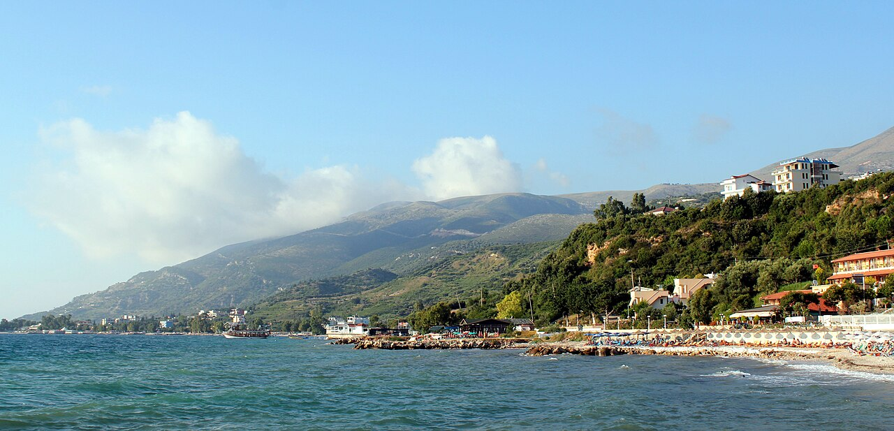

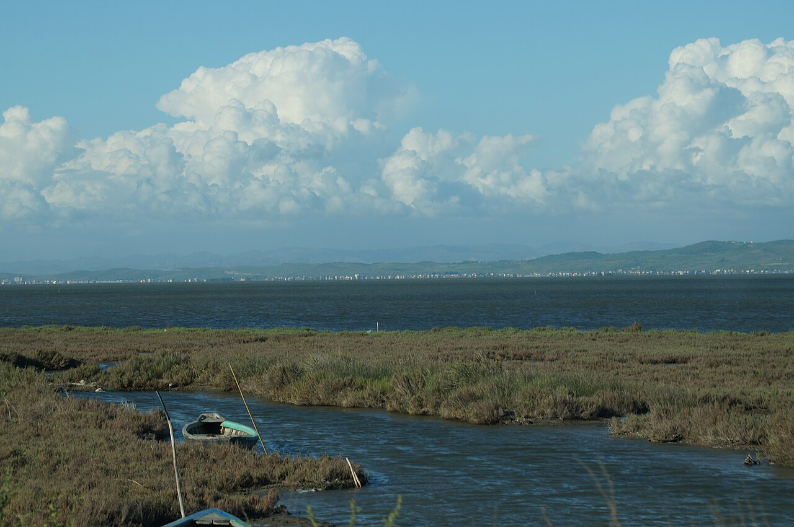
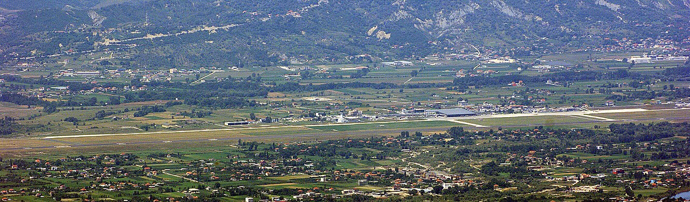
🌧 Planas B (jei blogas oras)
Karavasta be lietaus – lankytojų centras vietoje bokšto.
Karavastos apžvalgos bokštas (35 m) ir pėsčiųjų takas aplink lagūną priklauso nuo oro – vėjuotu ar lietingu metu kopti nesaugu, paukščių stebėti per lietų beprasmiška. Ši diena baigiasi toje pačioje vietoje (TIA) kaip ir pagrindinis planas.
🚗 Viso važiavimo: apie 3 val. 32 min.
🧭 Plano B maršrutas Google Maps💡 Karavastos parko lankytojų centro ekspozicija veikia visas savaitės dienas nepriklausomai nuo oro – bokštą ir atvirą taką šią dieną tiesiog praleiskite.
🗺 Žemėlapis
🌦 Orų prognozė
Visoms dienoms rodomas tipinis oras šiam laikotarpiui (spalio pabaiga – lapkričio pradžia) – tiksli prognozė atsiras likus maždaug 2 savaitėms iki kelionės.
1 diena · Tirana · spalio 30 d., penktadienis
2 diena · Beratas · spalio 31 d., šeštadienis
3 diena · Vlorė / Radhimė pakrantė · lapkričio 1 d., sekmadienis
4 diena · grįžtamasis skrydis · lapkričio 2 d., pirmadienis
💶 Biudžeto suvestinė
Visai grupei (4 keliautojai), 3 naktys, 2026 m. spalio 30 d. – lapkričio 2 d.
| Kategorija | Min (€) | Tikėtina (€) | Maks (€) |
|---|---|---|---|
| ✈️ Skrydžiai (WAW↔TIA, 4 asm.) | 381 | 421 | 461 |
| 🚗 Automobilio nuoma (su draudimu) | 160 | 190 | 230 |
| 🏨 Nakvynė (3 naktys) | 242 | 306 | 490 |
| 🍽️ Maistas (4 dienos) | 300 | 360 | 420 |
| 🎫 Įėjimo bilietai / muziejai | 15 | 30 | 50 |
| ⛽ Kuras | 65 | 80 | 95 |
| Iš viso (4 asm.) | 1163 | 1387 | 1746 |
| Vienam asmeniui | ~291 | ~347 | ~437 |
- Skrydžio kaina nurodyta be bagažo – su įsineštiniu/registruojamu bagažu kaina bus arčiau stulpelio „Tikėtina/Maks“.
- Tiranos viešbučio kaina – bendras įvertis, konkrečioms datoms rezervuojant verta patikslinti.
- Pakrantės (Vlorė/Radhimė) nakvynę rekomenduojama iš anksto patikrinti, ar vietos dirba lapkričio 1 d. – dalis sezoninių objektų spalio pabaigoje užsidaro.
- Degalų suma paskaičiuota pagal vidutinį kompaktinio SUV sunaudojimą ir maršruto atstumą.
🎒 Ką pasiimti
- Skysčius rankiniame bagaže laikykite atskirame 1 l skaidriame maišelyje, kiekvienas buteliukas iki 100 ml.
- Oras svyruoja tarp ~11°C ryte/vakare ir ~22–24°C dienos viduryje – rinkitės sluoksniuojamus drabužius.
- Lietaus tikimybė didžiausia paskutinę dieną (Karavastos lagūna) – lietaus striukę laikykite po ranka, ne lagamino dugne.
- Albanijoje elektros kištukai tokie pat kaip Lietuvoje – papildomo adapterio nereikia.
- Atsisiųskite offline žemėlapius (pvz. Google Maps ar Maps.me) kalnuotoms/pakrantės atkarpoms, kur signalas gali dingti.
- Senamiesčių (Beratas, Krujė) grindinys netinkamas lagaminams su mažais ratukais – rinkitės kuprines ar minkštus krepšius.
Dokumentai ir pinigai
Drabužiai
Avalynė
Vairavimui
Elektronika
Higiena ir kelionės reikmenys
🚗 Automobilio nuoma
Rekomenduojama klasė
Kompaktinis SUV
Dacia Duster, Kia Sportage, Hyundai Tucson
Geriausias pasirinkimas: pakankama prošvaisa kalvotiems keliams, erdvi bagažinė 4 žmonių bagažui, rudens lietui stabilesnis laikymasis kelyje nei sedanui.
~38 €/parai · ~150 € visai kelionei
Universalas
Skoda Octavia Combi, VW Passat Variant
Jei prioritetas – mažesnės degalų sąnaudos ir žemesnė kaina: didelė bagažinė, bet mažesnė prošvaisa kai kuriuose ruožuose.
~30 €/parai · ~120 € visai kelionei
7 vietų minivenas
Dacia Jogger, VW Caddy Maxi
Alternatyva, jei vežatės daug bagažo: daugiau vietos daiktams, bet mažiau tinkamas kalvotiems keliams ir brangesnis degalams.
~40 €/parai · ~160 € visai kelionei
Nuomos bendrovės
Karruka Rent a Car Rinas
Kompaktinis SUV (Kia Stonic / VW T-Cross), 5 vietos
~200 € visai kelionei
Aukščiausiai vertinama nuomos bendrovė tiesiai TIA oro uoste – patikimas pasirinkimas be transportavimo, patogu atsiimant vakare po atvykimo skrydžio.
📍 Atsiėmimas: TIA, terminalo prieigoje
RezervuotiEasydrive Albania
Kompaktinis SUV (Hyundai Tucson / Kia Sportage), 5 vietos
~180 € visai kelionei
Geriausias kainos ir kokybės santykis: skaidrūs įkainiai be paslėptų mokesčių, naujas automobilių parkas.
📍 Pristatymas/atsiėmimas TIA, 24/7
RezervuotiRental Cars Tirana
Kompaktinis SUV, 5 vietos
~160 € visai kelionei
Vietinė, patikima įmonė su labai geru vertinimu ir konkurencinga kaina – gera alternatyva, jei pirmieji du pasirinkimai neturėtų laisvo automobilio.
📍 Atsiėmimas: TIA
Rezervuoti- Nuomos trukmė skaičiuojama nuo atsiėmimo spalio 30 d. vakare iki grąžinimo lapkričio 2 d. iki 17:00 – apie 3–4 paras, patikslinkite rezervacijos metu.
- Reikės kredito kortelės depozitui (dažniausiai 200–500 €, blokuojama, ne nuskaitoma) – pasiimkite kortelę to paties asmens, kuris nurodytas kaip vairuotojas.
- Degalų politika dažniausiai „pilnas bakas – pilnas bakas“ – prieš grąžinimą prie TIA užpildykite baką.
- Kelionė žiedinė (TIA–TIA), tad papildomo „one-way“ mokesčio neturėtų būti.
- Prieš pasirašant sutartį nufotografuokite automobilio būklę – apsaugo nuo ginčų dėl žalos grąžinant automobilį.
🍽 Kur pavalgyti
1 diena · Tirana (Bloku kvartalas)
2 diena · Krujė, Beratas
3 diena · Vlorė / Radhimė
4 diena · Divjakė
🍸 Ypatingi barai
🍴 Ką paragauti
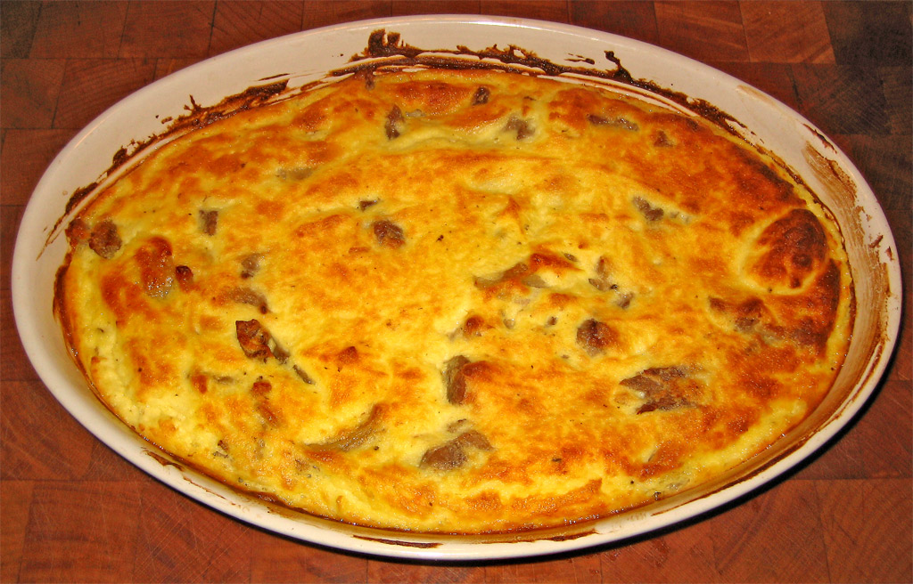
Tavë kosi
Albanijos nacionalinis patiekalas – ėriena, keptanti orkaitėje su ryžiais ir jogurto-kiaušinių padažu.
2–10 €
Kur paragauti: Restorant Mangalemi, Homemade Food Lili, Snack Bar Derexhiku
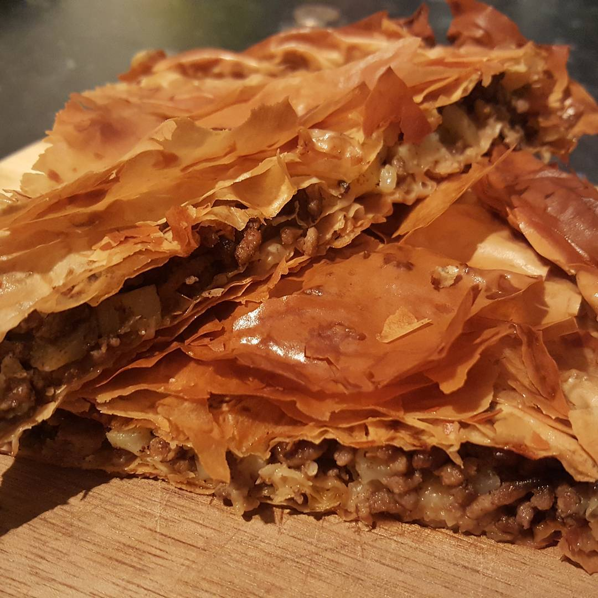
Byrekas
Sluoksniuota tešlos pyragėlis su varške, špinatais, mėsa ar moliūgu – klasikinis užkandis.
1–3 €
Kur paragauti: Snack Bar Derexhiku, Era Blloku, Taverna TE LILO
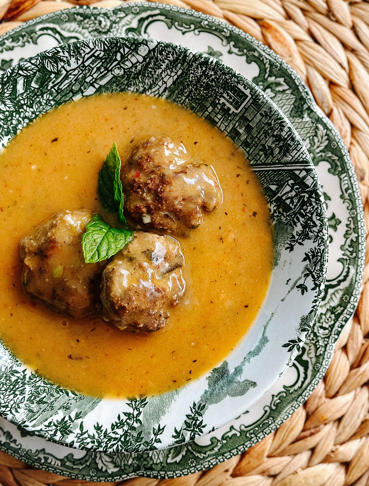
Kofta (Qofte)
Rankomis formuotos keptos mėsos kukulės su kmynais, mėta ir svogūnu.
2–5 €
Kur paragauti: Juvenilja, Taverna Te Saçi, Era Blloku

Fërgesë
Paprikos, pomidorai ir šviežia gjizė troškinami moliniame puode.
3–6 €
Kur paragauti: Restorant Mangalemi, Guva Mangalem, Homemade Food Lili

Taratoras
Šaltas jogurto, agurkų, česnako ir krapų sriuba – puikiai atgaivina.
2–4 €
Kur paragauti: Restorant Mangalemi, Taverna Te Saçi
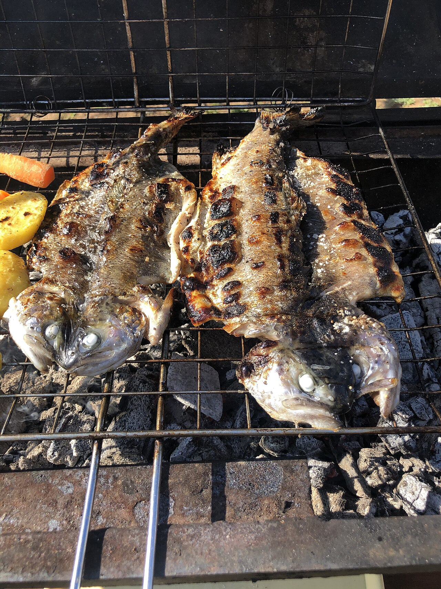
Peshk i pjekur (kepta žuvis)
Šviežia jūros ar lagūnos žuvis, kepta ant grotelių su citrina ir alyvuogių aliejumi.
8–16 €
Kur paragauti: Vela Beach Restaurant, Taverna TE LILO, Ali Kali
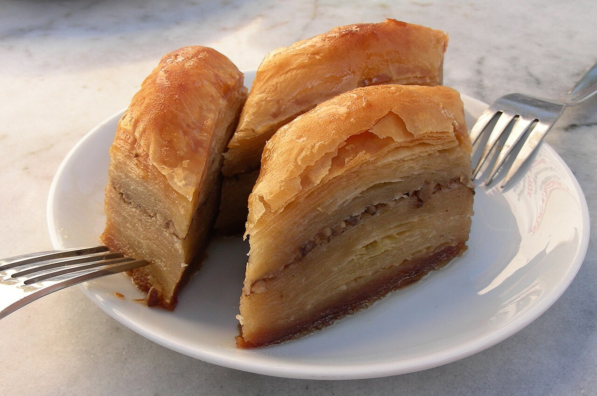
Bakllava
Sluoksniuotas tešlos saldumynas su riešutais, įmirkytas cukraus sirupu.
2–4 €
Kur paragauti: Guva Mangalem, Homemade Food Lili
ℹ️ Praktinė informacija
- ✈️ Skrydis ten
- Varšuva (WAW) → Tirana (TIA), spalio 30 d., atvykimas ~20:30
- ✈️ Skrydis atgal
- Tirana (TIA) → Varšuva (WAW), lapkričio 2 d., išvykimas ~19:05
- 🚗 Automobilio grąžinimas
- Lapkričio 2 d. iki 17:00, Tiranos oro uostas (TIA)
- 📞 Kontaktai
- Vairuotojas: ____
Nuomos bendrovė: ____
Viešbučiai: ____